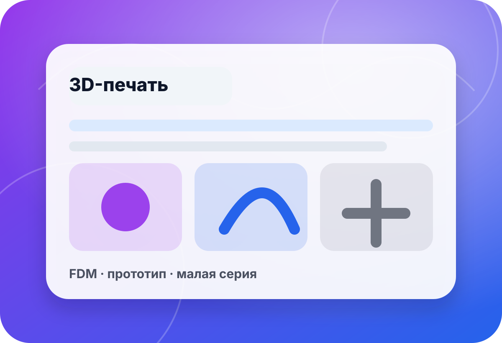

услуга · 3D-печать
3D-печать прототипов, мастер-моделей и проверочных деталей
Печать подбирают по задаче: проверить посадку, сделать мастер-модель, получить макет или подготовить основу для формы. В preview не публикуем неподтверждённые цены, сроки, точность, материалы и гарантии результата без оценки файла.
- файл
- STL/CAD
- деталь
- задача
- материал
- подбор
- проверка
- бриф

быстрый выбор
Сначала определите назначение печатной детали
Для посадочного прототипа, декоративного макета и мастер-модели под силиконовую форму нужны разные требования к поверхности, прочности и обработке.
Файла ещё нетЕсли есть только физическая деталь или идея, начните с моделирования и реверс-инжиниринга.К моделированию →Нужно снять объектСканирование поможет получить базовую геометрию для дальнейшей подготовки.К сканированию →Нужна форма после печатиДля мастер-модели заранее продумываем поверхность, съём и силикон.К материалам форм →
связанные услуги
Что может понадобиться до и после печати
Ссылки ведут на существующие страницы. Точные сроки, стоимость и материал определяются после оценки файла и задачи.
 ▣
▣3D-печать под заказ
Общий раздел для печати деталей, макетов и прототипов.
- файл
- материал
- задача
Инжиниринг
Подготовка модели, правки геометрии и техническая оценка перед печатью.
- CAD
- правки
- контроль
3D-сканирование
Если нужно скопировать физический объект или восстановить геометрию.
- объект
- скан
- STL
 ◎
◎Силиконы для форм
Для тиражирования печатная деталь может стать мастер-моделью.
- форма
- съём
- литьё
 ✦
✦Жидкие пластики
Если печать нужна как мастер, дальше можно перейти к отливкам.
- отливка
- серия
- материал
Оценка файла
Опишите деталь и приложите файл — подскажем маршрут печати.
- STL
- размер
- цель
чек-лист
Что подготовить для оценки
Файл и формат
Лучше заранее проверить масштаб, единицы измерения, толщины стенок и целостность сетки.
Уточнить:STL · STEP · масштаб · стенкиНазначение детали
Прототип, макет и мастер-модель требуют разного подхода к поверхности и прочности.
Уточнить:посадка · макет · мастер · серияКритичные зоны
Отметьте отверстия, сопряжения, видимые поверхности и места, где важна обработка.
Уточнить:отверстия · плоскости · вид · обработкаДальнейший процесс
Если после печати будет форма или литьё, модель нужно подготовить с учётом съёма.
Уточнить:форма · силикон · литьё · тиражмини-бриф
Опишите деталь — оценим маршрут 3D-печати
Форма в preview не отправляет данные на сервер. Для реального запуска подключается CRM/почта/мессенджер после согласования.